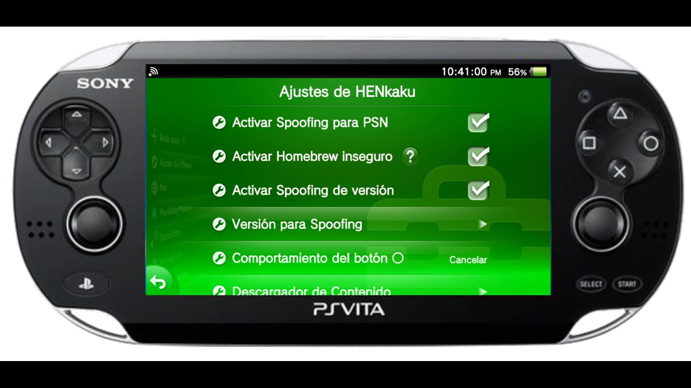

Liberar PSVITA Sin PC
Ahora podemos liberar nuestra consola PSVita sin la necesidad de un computador solo con internet

Para esta Guia
Requisitos para este tutorial
Para Empezar este Tutorial
- Para Este Método
- Solo debemos abrir el navegador de la consola y ingresar a las Siguientes WEB
- Español
https://marchelobm.github.io/ - Si no carga automáticamente podemos escribir la ruta completa
https://marchelobm.github.io/PSVita/PSVita - Español
https://lptutoriales.es/henlo - Ingles
https://deploy.psp2.dev/ - Una vez cargada la WEB le damos a Liberar mi Vita
- Y después le damos a Liberar en la siguiente ventana
- Una vez que cargue todo son saldrá el menú para desbloquear nuestra consola
- Le damos a Instalar VitaDeploy + Autoplugin2
- Después le damos a instalar HENkaku
- Y después le damos a Salir y esperamos que salga de la aplicación
- Una vez estemos en el menú principal de la consola nos vamos a Ajustes
- Después nos vamos a ajuste de HENkaku y marcamos las siguientes casillas 
- Después nos devolvemos atrás y vamos a Ajustes de ahorro de energía
- Dejamos el modo Entrar en modo de espera automáticamente en 30 minutos, después al terminar el tutorial lo dejamos en el tiempo que más nos acomode
- Salimos de los ajustes y tendremos 2 nuevas burbujas
- Abrimos VitaDeploy y lo configuramos
- y le damos a Instalar un SO Diferente y le damos a Paquete Actualización de Playstation y marcamos la casilla Instalar enso
- Después le damos para atrás y le damos a Instalación 3.65 Rápida
- Y esperamos a que se instale todo y nos pedirá confirmar la instalación de 3.65 le damos a la
 y esperamos
y esperamos - Después le damos equis para aceptar todo y esperamos que se reinicie con todo instalado
- Después del reinicio vamos a ajuste para ver si está el Ajuste de HENkaku
- Y cambiamos la Visión para Spoofling y lo demos en 3.74
- Y estaríamos listo volvemos a la pantalla principal
- Ya podemos instalar las aplicaciones que más necesitemos en nuestra consola
- Ahora podemos descargar algunas aplicaciones
- Para poder comenzar para esto abrimos VitaDeploy ESP MOD
- Y nos vamos a Descargador de Apps
- Y descargamos las siguientes APP
- VitaShell
- iTLS installer
- Adrenaline
- PKGJ
- Una vez descargadas e instaladas solo nos queda configurar las aplicaciones descargadas
- Y listo solo queda configurar las aplicaciones


×